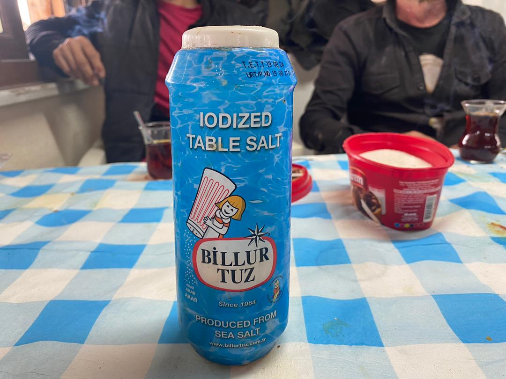

Real Story · 中文
我听不懂他说什么，但我看得懂他的眼神。
我选择 CampOluza，是因为它在 Google Maps 有不错的 reviews。 到达以后，我才发现 owner 不会说 English。 有时候 internet coverage 也不好，所以 Google Translate 也不一定可以顺利帮忙。
但是没有关系。 我们就用 body language、hand gesture，还有一点点猜测来沟通。 语言不通，并没有让这个地方变冷。 反而让我更注意他的动作、表情，还有他介绍这个 camp 时的眼神。
Built by Hands
A campsite made by family, friends, and fire.
From the video, you can see how Ali introduced CampOluza. He built it with his family and friends, step by step, with real passion. I could not understand even one word, but nothing stopped the communication, because I could see the fire in his eyes.
Some places do not need perfect translation. They show themselves through hands, materials, movement, and the way someone points to what they have built.

Rest Days
Two days to chill, relax, and learn something new.
I spent 18 March and 19 March at CampOluza, letting myself chill and relax after the previous Turkey road. The campsite gave me a different pace: not rushing, not solving border problems, not chasing the next point immediately.
I also learned how to drive the 400cc CFMOTO CForce 450L. It became one of those small overland skills that appeared unexpectedly — a new machine, a new campsite, and a new memory beside the Black Sea route.
English Memory Summary
When translation failed, passion still worked.
Tuzi chose CampOluza because it had good reviews on Google Maps. When she arrived, the owner, Ali, could not speak English, and internet coverage was sometimes unstable. Instead of stopping the interaction, they communicated with hand gestures and body language.
Ali introduced the campsite he had built with his family and friends. Tuzi could not understand the words in the video, but she could understand the passion behind them. During the stay on 18 and 19 March, she rested, noticed small local details like Turkish table salt, and learned to drive the 400cc CFMOTO CForce 450L.
Heart Statement
有些热情，不需要翻译。
I could not understand his words. But I could understand the place, the hands that built it, and the fire in his eyes.